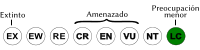

Montastraea faveolata
| Montastraea faveolata | |
|---|---|
| Riesgo de extinción | |
|  Preocupación menor (UICN) | |
| Clasificación científica | |
| Reino: | Animalia |
| Filo: | Cnidaria |
| Clase: | Anthozoa |
| Orden: | Scleractinia |
| Familia: | Faviidae |
| Género: | Montastraea |
| Especie: | Montastraea faveolata |
| Nombre binomial | |
|
Montastraea faveolata Ellis and Solander, 1786 | |
Contenido
Taxonomía
Nombres comunes
Coral estrella montañoso, mucura, Mountainous star coral
Notas taxonómicas
Sinónimos
Descripción
Es uno de los corales de formadores de arrecife de mayor tamaño, y que contribuye con la mayor parte de la cobertura coralina viva en gran parte de los arrecifes coralinos del Caribe. De envergadura alcanza 3-4 m y de altura 2-3 m (Szmant, 1997); con una forma de crecimiento predominantemente masiva-montañosa. Las colonias están conformadas por pólipos cónicos de unos 0.5 mm de diámetro, de coloración marrón y con bocas generalmente verdes (en algunos casos fluorescentes). La base de las colonias termina en láminas extensas en forma de faldas.
Distribución
La especie presenta una amplia distribución encontrándose en la mayor parte de los arrecifes del Caribe, desde Bermuda y el sur de Florida y norte de Bahamas hasta el Caribe Sur en Colombia, Trinidad y Tobago y Venezuela (Cortés, 2003). Igualmente desde el norte en Veracruz, parte del golfo de México, el Caribe Mexicano y también a lo largo del arco de las Antillas menores.
Situación
'Lista Roja Venezuela' Preocupación Menor
'Lista Roja internacional' En peligro A2ace
Esta especie contribuye con la mayor parte de cobertura viva de los arrecifes del Atlántico Occidental, distribuyéndose a lo largo de diferentes hábitats; incluyendo aguas someras (2-5 m), profundas (hasta 30 m); protegidas y expuestas al oleaje. En ocasiones puede presentar coberturas relativas que oscilan entre 80-90 % del coral vivo en arrecifes ubicados tanto en las islas oceánicas como en las costas de Venezuela; pero su importancia como constructor de arrecifes es mayor en localidades oceánicas de la costa central del país y tiende a disminuir a lo largo de las costas orientales. La morfología de las colonias confiere alto relieve a los arrecifes, en particular, en hábitats ubicados entre 10-20 m de profundidad. En las últimas décadas, se ha reportado disminuciones significativas en la abundancia de M. faveolata en diferentes partes del Caribe, incluyendo Venezuela. Por ejemplo, entre 1980 y 1994 Hughes reportó una disminución en la cobertura de esta especie de al menos 90% en Jamaica. En Puerto Rico, esta especie ha disminuido su cobertura viva entre 40 y 80% (Hernández-Delgado 2005, Bruckner and Bruckner 2006) y de 72 % en US Virgin Islands en un período de 10 años (Edmunds y Elahi 2007). En general se ha observado una tendencia a la reducción del tamaño de las colonias en algunos arrecifes de Puerto Rico y Florida (Dustan y Halas 1987, Bruckner and Bruckner 2006). En Venezuela dos eventos han producido pérdidas significativas en la cobertura de esta especie: (1) la mortandad masiva de 1996 en el Parque Nacional Morrocoy y (2) el blanqueamiento de 2010. El estado de las poblaciones de Montastraea faveolata en los arrecifes venezolanos, por lo tanto, parece reflejar tendencias similares a las reportadas en el Caribe. Estimaciones de densidad promedio varían entre 0 individuos/m² en algunos arrecifes depauperados del Parque Nacional Morrocoy, hasta 2-5 individuos/m² en el Parque Nacional Archipiélago de Los Roques. Su importancia como especie constructora del arrecife es evidente en muchas localidades; donde se pueden observar colonias de hasta 3 m de altura y 3 m de ancho recientemente muertas (p. ej. Parque Nacional Los Roques). En otras localidades como el Parque Nacional Morrocoy, se pueden observar colonias muertas por décadas y colonias muertas recientemente, algunas con signos de recuperación y otras cubiertas por algas. Aunque el estado actual de las poblaciones en el Caribe no está muy claro, en el 2008 esta especie fue incluida en la lista roja del IUCN bajo la categoría “En peligro A2ace”. En la actualidad, Montastraea faveolata se ha propuesto como especie amenazada según el “US Endangered Species ACT” (ESA).
Amenazas
Las principales amenazas que enfrenta esta especie son: (1) eventos de blanqueamiento masivos y (2) enfermedades coralinas. En el primer caso, períodos prolongados de estrés térmico en los que la temperatura promedio del mar en las islas oceánicas y las costas de Venezuela se han mantenido por encima de 2 C por varios meses, han producido mortandades extensas, en especial, en arrecifes oceánicos. Esta condición fue registrada en el año 2005 y 2010 a lo largo de todo el Caribe y también en muchos arrecifes del Parque Nacional Los Roques, respectivamente. Las enfermedades coralinas como el síndrome o enfermedad de banda amarilla (EBA) y la enfermedad de plaga blanca (EPB) han impactado las poblaciones de esta especie tanto en arrecifes oceánicos como en arrecifes costeros de Venezuela (Cróquer et al. 2003, 2005) y del Caribe (Weil 2004, Weil y Cróquer 2009). Combinados, estas amenazas pudieran comprometer la supervivencia de esta especie a mediano o largo plazo, llevando a las colonias por debajo de su tamaño mínimo reproductivo (Weil et al. 2009).
Conservación
La especie no se encuentra incluida en el Apéndice II del CITES, pero sí se encuentra (como todas las especies del orden scleractinia) en el Anexo III del Protocolo Relativo a las Áreas y Flora y Fauna Silvestres Especialmente Protegidas en la Región del Gran Caribe (SPAW) [10,11]. En Venezuela no se ha adoptado ninguna medida de conservación en particular. La especie se encuentra distribuida en la mayor parte de los arrecifes y comunidades arrecifales de Venezuela, pero predominantemente en las Islas oceánicas y algunas bahías de la región centro-occidental del país. Su abundancia disminuye en la región oriental. La disminución de cobertura por blanqueamiento y/o enfermedades, es reciente y se encuentra bien documentada en los Parques Nacionales Morrocoy y Los Roques. Se propone mejorar los programas de seguimiento del estado de salud de estas poblaciones, así como estimaciones de tasas de reclutamiento y regeneración de tejido. Se hace necesaria la evaluación de un mayor número de áreas afectadas o no por blanqueamiento y enfermedades para cuantificar la pérdida o mantenimiento de cobertura viva.
Editores y Colaboradores
Aldo Cróquer, Estrella Villamizar, Ana Iranzo, Ainhoa L. Zubillaga, Carolina Bastidas
Referencias
Bruckner AW, Bruckner RJ (2006) Consequences of yellowband disease (YBD) on Montastraea annularis (species complex) populations on remote reefs off Mona Island, Puerto Rico. Dis Aquat Org 69:67–73.
Cortés, J. 2003. Latin American Coral Reefs. Elsevier. New York. 497 pp.
Dustan, P. y Halas, J.C. 1987. Changes in the reef-coral community of Carysfort Reef, Key-Largo, Florida — 1974 to 1982. Coral Reefs 6:91–106.
EdmundS, P. y Elahi, R. 2007. The demographics of a 15-year decline in cover of the Caribbean reef coral Montastraea annularis. Ecological Monographs, 77(1), 2007, pp. 3–18. Hernández-Delgado. 2005. Historia natural, caracterización, distribución y estado actual de los arrecifes de Puerto Rico. En: Joglar, R. Biodiversidad de Puerto rico: Vertebrados terrestres y ecosistemas. Serie Historia natural. Editorial Instituto de Cultura Puertoriqueña, San Juan. 281-356.
Hughes, T. 1994. Catastrophes, Phase Shifts, and Large Scale Degradation of a Caribbean coral reef. Science, New Serie 265(5178): 1547-1551.
Szmant, A. 1997. Nutrient effects on coral reefs: a hypothesis on the importance of topographic and trophic complexity to reef nutrient dynamics. Proc. 8th Int. Coral Reef Symp
Weil, E. 2004. Coral reef diseases in the wider Caribbean. In: Rosenberg E, Loya Y (eds) Coral health and disease. Springer-Verlag, Berlin, p 35–67. Weil, E y Cróquer, A. 2009. Spatial variability in distribution and prevalence of Caribbean scleractinian coral and octocoral diseases. I. Community-level analysis. Dis Aquat Org. 83: 195–208.